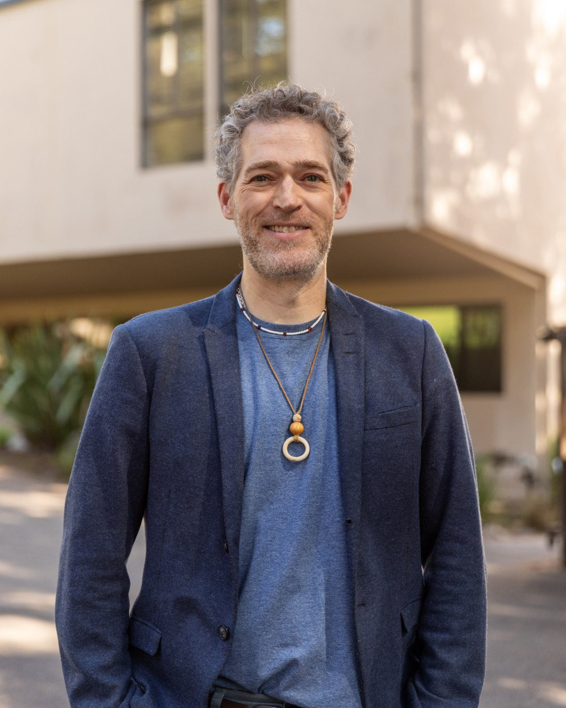

RESEARCH AREA 01↗
Global urban climate governance ↗
How cities and transnational municipal networks claim authority, coordinate climate action, and reshape the institutions of global politics.
I study how cities claim authority, build networks, and confront the political challenges of climate change and global governance.

I am an Associate Professor in the Department of Politics at the University of California, Santa Cruz.
My research examines the changing politics of global environmental governance, focusing on cities, transnational networks, and the institutional dynamics of climate action. I am interested in how authority is constructed, exercised, and contested across local and global scales.
Across my work, I explore how cities become global political actors, how networks shape policy and political possibilities, and when governance initiatives reproduce or transform existing relations of power.
UCSC faculty profile ↗My projects connect international relations, comparative politics, and urban studies to understand political change across scales.
How cities and transnational municipal networks claim authority, coordinate climate action, and reshape the institutions of global politics.
Why cities disclose climate commitments and performance, and how transparency intersects with political legitimacy and accountability.
How transnational interventions travel across cities and regions—and how fragmented authority and local institutions shape their effects.
How digital twins, advanced air mobility, and anticipatory infrastructures create new political imaginations and possibilities for urban transformation.
Current projects include comparative research on South Asian urban climate plans, the politics of climate transparency, and the governance of emerging urban technologies.
Books, articles, and commentary on cities and global environmental politics. A selected bibliography; not a complete list.

The Politics of Global Urban Climate Governance
Examines the emergence and politics of city networks as sites of global climate governance, with attention to authority, recognition, and the construction of shared practices.
View at Cambridge University Press ↗My courses connect international relations theory with the politics of global environmental change, urban governance, and transnational authority. Students examine how political institutions and actors shape collective responses to challenges that cross borders.
I teach undergraduate and graduate courses at UC Santa Cruz and supervise graduate research in international relations, environmental politics, and urban governance.
Courses, teaching interests & graduate mentorship ↗POLI 70 · Global Politics
POLI 160A · Theories of International and World Politics
POLI 174 · Global Political Ecology
POLI 190F · Cities in World Politics
POLI 213 · Who Governs the Globe? Shifting Authority in Contemporary World Politics
For academic collaboration, research inquiries, speaking engagements, or graduate research interests, please get in touch.
dagordon@ucsc.edu ↗